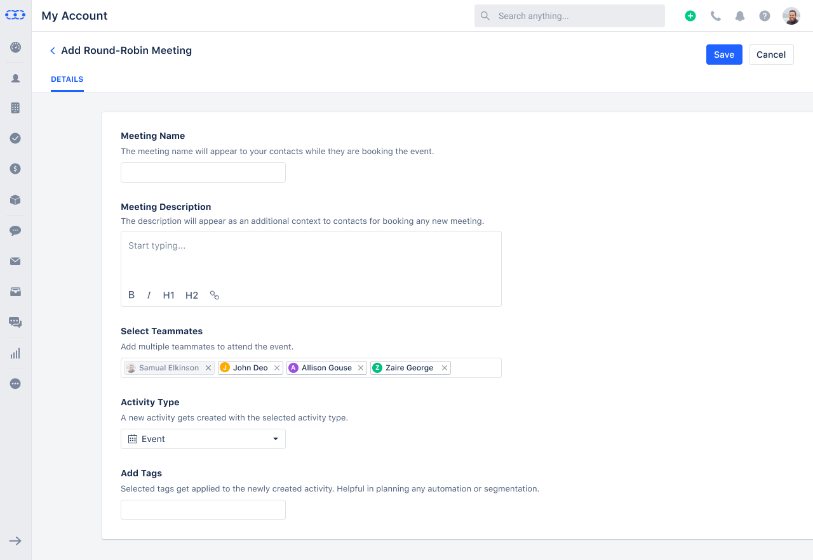
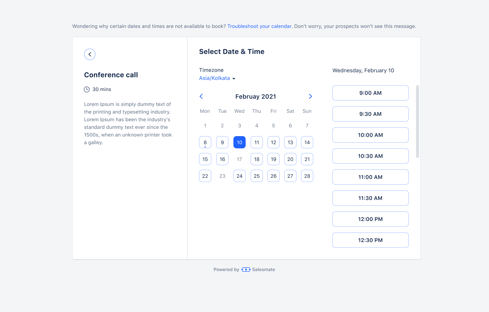
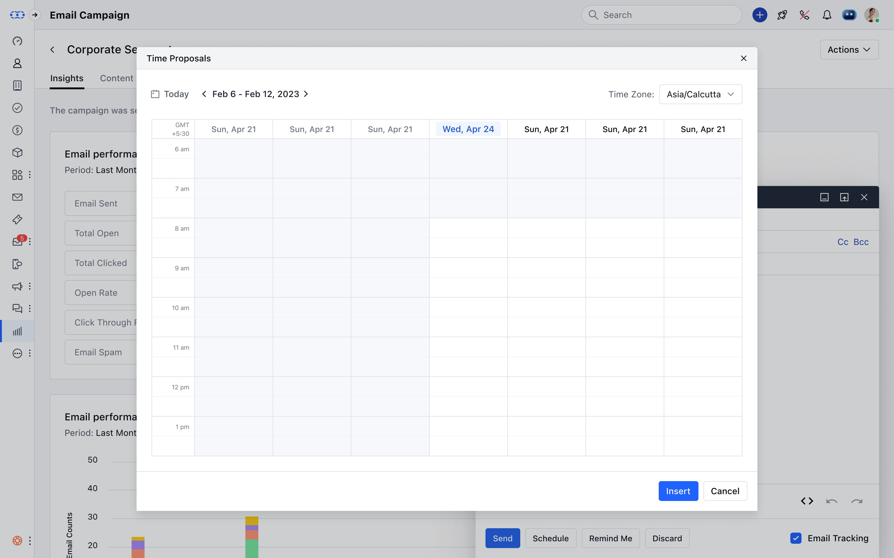
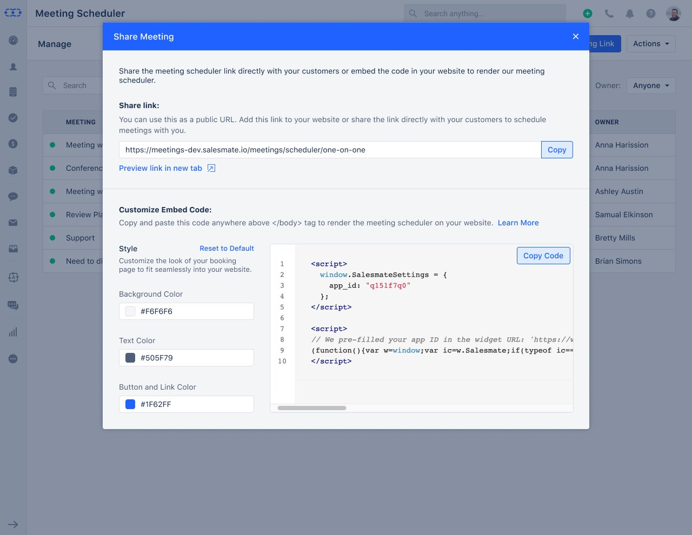

Eliminating the back-and-forth of email scheduling - a no-code booking system for one-on-one, group, team, and round-robin meetings, shareable anywhere.
End-user booking page - What your customers see
salesmate.io · Meeting Scheduler
Customer-facing booking page - conference call with date picker and available timeslots
Role
Product Design Lead
Platform
Salesmate CRM · Web
Collaboration
CEO-direct
Status
Live · Shipped
Tools
Figma Design · FigJam
01
Overview
Meeting Scheduler lets Salesmate users create shareable booking pages that connect directly to their calendar. Contacts book meetings at available times without any email back-and-forth. Each booking automatically creates a CRM activity, tags it, and syncs to the user's connected calendar.
The product supports four distinct meeting types - each with shared core fields and type-specific configuration. It also integrates deeply into Salesmate's email composer, embeds into external websites, and connects to video conferencing tools like Zoom, Google Meet, and Microsoft Teams.
02
Scheduling a meeting still meant five emails back and forth - "Does Tuesday work?" "I'm busy." "How about Thursday?" "What time zone are you in?"
01 - FRICTION
Email scheduling loops
Every meeting required manual coordination - proposing times, waiting for replies, adjusting for time zones. For sales teams booking demos all day, this was a constant drain.
02 - CONTEXT LOSS
No CRM connection
When meetings were booked through external tools (Calendly etc.), the data lived outside the CRM. No activity record, no tags, no automation triggers, no pipeline visibility.
03 - TEAM COMPLEXITY
No team booking logic
Distributing demo bookings across a sales team - fairly, based on priority or equal distribution - was handled manually or not at all. No system existed to automate it.
03
Four Meeting Types
One product, four distinct booking models. The core fields (name, description, URL, location, duration, availability) are shared across all types. What differs is who attends, how slots are allocated, and what the availability logic checks.
01
One-to-One
Standard 1:1 meeting between the scheduler owner and one contact. The most common type - product demos, sales calls, support sessions.
Availability checks the owner's calendar only. Owner name shown as headline on booking page.
02
Group
Webinar-style: one time slot, multiple invitees. Set a max attendee limit. Show or hide remaining spots to create booking urgency.
Participants added to one existing activity. ICS sent individually per attendee. Spots tracked in activity title: "Angular Webinar (3 of 50 filled)".
03
Team Meeting
Multiple team members attend every meeting with the contact - useful for product demos with a sales + technical rep present.
ALL teammates must be free for a slot to appear. Disabled teammates are excluded from availability checks automatically.
04
Round Robin
Distributes bookings across a team. Two policies: Priority (assign by numbered rank) or Equal Distribution (balance evenly across teammates).
Equal distribution monitors booking counts per person - hides over-booked members until others catch up. Disabled users automatically skipped.
04
Design Decisions
A
Configuration
One Shared Form, Type-Specific Extensions
All four meeting types share the same core form structure - Meeting Name, Description, URL, Location, Activity Type, Tags, and Company Logo. Type-specific fields appear only when relevant: Group meetings add "Max invitees" and "Display remaining spots". Team and Round Robin meetings add "Select Teammates". This kept the form predictable regardless of meeting type, and made it easy to understand what makes each type different at a glance. The Meeting URL field auto-generates from the meeting name, with a live preview of the full URL as you type - permanent once saved, never changeable after creation.
Screens - One-to-One form (basic) + Phone Call location expanded
Phone Call location expanded - "I will call invitee" vs "My invitee should call me" with logo options
B
Meeting Location
Location Clarifies Who Does What
The Location field goes beyond "where" - it defines the logistics of the meeting. Options include In Person (with a venue text field), Phone Call with a critical sub-choice: "I will call invitee" (makes phone number required on the booking form) vs "My invitee should call me" (puts the host's number in the calendar event description). Video conferencing tools - Zoom, Google Meet, Microsoft Teams - appear here if enabled on the account. Each option generates the right information in the right place in the calendar event, so nothing needs to be communicated separately after booking.
C
Team Booking Logic
Round Robin - Fairness Built Into the System
Round Robin was the most complex booking type to design because it introduces distribution logic the user needs to understand and configure. Two policies: Priority assigns meetings to team members in a numbered order (1 gets first, then 2, etc.); Equal Distribution monitors how many bookings each person has received and hides over-booked members from the booking page until others catch up. The teammate picker uses avatar tags for quick visual confirmation of who's included. Disabled users are automatically excluded from availability and distribution - no manual management required when someone leaves.
Screen - Round Robin setup with teammates selected
salesmate.io · Meeting Scheduler

Add Round-Robin Meeting - teammates picker with Samual Elkinson, John Deo, Allison Gouse, Zaire George selected
D
End-User Experience
The Booking Page - Designed for the Contact, Not the Rep
The customer-facing booking page is the most important screen in the product - it's what converts a lead into a scheduled meeting. The layout is a clean three-column design: meeting details on the left (name, duration, description), date picker in the centre, available timeslots on the right. The contact picks a date, sees available slots update in real time, selects a time, and confirms. Timezone is displayed and switchable. The "Powered by Salesmate" footer is shown only on the public booking page - contacts see a professional, distraction-free booking experience. A Troubleshoot Mode is available for admins - visible only to them, never to contacts - to diagnose why certain timeslots aren't showing.
Screen - Customer-facing booking page
salesmate.io · Meeting Scheduler

End-user booking page - Conference Call · 30 mins · calendar date picker · available timeslot list · timezone selector
E
Sharing
Two Ways to Share - Link or Specific Timeslots
Inside Salesmate's email composer, a Meeting Scheduler button opens a picker with two distinct sharing options per scheduler. "Select meeting scheduler" inserts a booking link directly into the email body - the contact clicks and books at their convenience. "Pick time" opens a weekly calendar view where the rep selects up to 3 specific available slots and inserts them as clickable time proposals in the email - the contact clicks their preferred time and it's instantly booked. Grey slots are unavailable (already booked or the user is busy). Timezone is handled automatically - if the meeting scheduler timezone differs from the user's, the displayed times are adjusted accordingly.
Screen - Time Proposals calendar in email composer
salesmate.io · Meeting Scheduler

Time Proposals modal - weekly calendar view for picking up to 3 timeslots to insert into email
F
Distribution
Embed Anywhere - With Brand Customisation
The Share Meeting modal provides both a public URL and an embeddable code snippet. The embed is customisable - background colour, text colour, and button/link colour are all editable with colour pickers, with a live preview of the script output. This allows teams to embed the booking widget directly on their website or landing page in brand colours, without any developer work beyond copy-pasting the script tag. Other sharing actions available from the listing: Copy Link, Clone, Change Owner, Enable/Disable, and Delete.
Screen - Share Meeting modal with embed code and style customisation
salesmate.io · Meeting Scheduler

Share Meeting - public URL + customisable embed code with background, text, and button colour pickers
05
Every booking creates a CRM record automatically - activity, tags, contact, and calendar event - with no manual entry required.
Auto CRM Activity Creation
Every booked meeting creates a Salesmate activity with the selected activity type (Event, Call, etc.) and any configured tags - enabling workflow automation and pipeline segmentation.
Calendar Sync
Booked meetings sync to the user's connected calendar (Google, Outlook). For Team meetings, all teammates get a calendar event. Group meeting attendees receive an ICS file individually.
Video Conferencing Integration
Zoom, Google Meet, and Microsoft Teams appear as location options when enabled. The meeting link is automatically added to the calendar event description upon booking.
Customise Greetings
Each user can customise their scheduler landing page - title (with variable substitution e.g. owner name), description, and company logo from Brand Book or custom upload.
Listing Actions
From the scheduler listing: Edit, Clone, Copy Link, Embed, Change Owner, Enable/Disable, Delete. Clone allows teams to duplicate a working scheduler as a starting point.
Troubleshoot Mode
Admins can view a troubleshoot overlay on the booking page to diagnose why certain dates or timeslots aren't appearing - invisible to contacts, accessible only to the authenticated user.
AI Pilot Integration
Meeting Scheduler is available as a pre-built tool inside AI Pilots - agents can check availability, select a scheduler based on conversation context, and book meetings directly in chat.
Plan-Based Access Control
Team Booking (Team + Round Robin types) and Group Booking are plan-gated features. Unavailable types show as disabled with tooltips rather than hidden - transparent upgrade prompts.
06
Outcome
Meeting Scheduler is live and in active use across Salesmate. Sales teams can share booking links via email, embed them on websites, or use them inside AI agent conversations - all with automatic CRM activity creation and calendar sync on every booking.
Zero Email Back-and-Forth
Contacts book directly from a shareable link or calendar embed. No email chains, no time zone confusion, no manual follow-up. The booking confirms everything automatically.
Every Booking in the CRM
Each booked meeting creates an activity with the right type, tags, and contact association - immediately available for pipeline reporting, automation triggers, and team visibility.
Team Booking at Scale
Round Robin and Team meeting types make demo distribution and multi-rep calls manageable - with built-in fairness logic and automatic handling of disabled or over-booked team members.